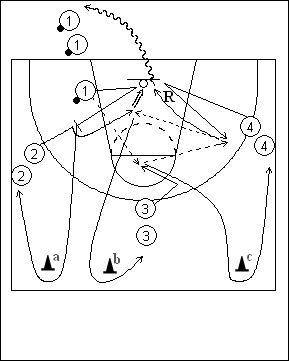

Catégorie : ECHAUFFEMENT (Ech-50000)
Déroulement
- Quatre files de joueurs. Une file avec ballons à la baseline. Une file du même côté à hauteur de la ligne des lancers-francs. Une file face à l’anneau à hauteur de la ligne des trois points. Une file à l’opposé à hauteur de la ligne des lancers-francs.
- Le premier joueur de la file 3 se démarque et reçoit la passe du premier joueur de la file 1. Il passe aussitôt au premier joueur de la file 4, tandis que le premier joueur de la file 1 place un back screen pour le premier joueur de la file 2 qui reçoit pour un lay-up.
- Après son écran pour 2, 1 contourne le cône a et va dans la file 2. Après son lay-up, 2 passe derrière le cône b et va dans la file 3. Après sa passe à 4, 3 contourne le cône c et va en 4. Après sa passe à 2 pour le lay-up, 4 effectue le rebond et va avec le ballon derrière la baseline dans la file 1.
Coaching points
- Insister pour que tous les joueurs exécutent les gestes corrects : démarquage de 3 pour recevoir la première passe; démarquage de 4 pour recevoir la deuxième passe; placement de l’écran de 1 et exploitation de cet écran par 2.
- Exiger le contournement des cônes avant de rejoindre les files suivantes.